The Legend of Zelda Games
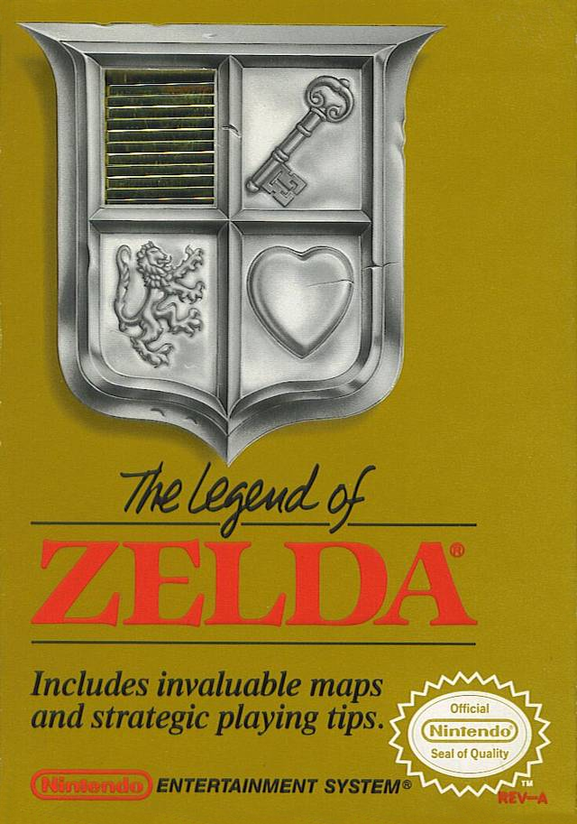
The Legend of Zelda
Nintendo Entertainment System (NES)
The game takes place in Hyrule, the land in which most Zelda games take place. In this land, Princess Zelda heard of Ganon, the Prince of Darkness's coming. She broke the Triforce of Wisdom into eight pieces to protect it from the wicked Ganon. Ganon kidnapped the princess and left her maid Impa to die. Link found Impa and learned what had happened and set out to reassemble the Triforce of Wisdom to save Zelda and stop Ganon.The Legend of Zelda II
Nintendo Entertainment System (NES)
Link returns to Hyrule to search for the Triforce and to awaken Zelda from an endless sleep. Embark on a quest to find the Triforce of Courage and save Hyrule from ruin. Learn magic spells, talk to people in towns to get clues, collect items to increase your power, and explore six palaces where the underlings of the evil Ganon await you. This sequel to the Adventure classic uses a side-scrolling visual engine unique to the series for more technical combat, and features more in-depth world roaming as Link encounters townsfolk while on his quest
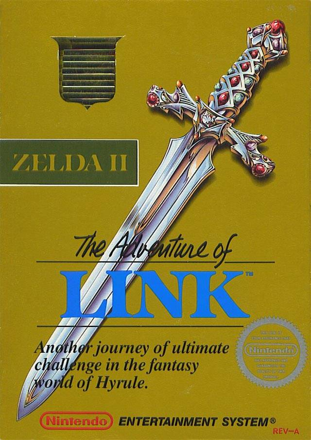

The Legend of Zelda: A Link to the Past
Super Nintendo Entertainment System (SNES)
The game starts with Link in his bed dreaming. In his dream Princess Zelda of Hyrule is calling to him from the castle dungeon. He runs to the castle to find his uncle nearly dead, injured by castle guards. Link takes up his sword to avenge his uncle's death.The Legend of Zelda: Link's Awakening
Game Boy
Unlike most The Legend of Zelda titles, Link's Awakening is set outside the kingdom of Hyrule. It omits locations and characters from previous games, aside from protagonist Link and a passing mention of Princess Zelda. Instead, the game takes place entirely on Koholint Island, an isolated landmass cut off from the rest of the world. The island, though small, contains a large number of secrets and interconnected pathways.
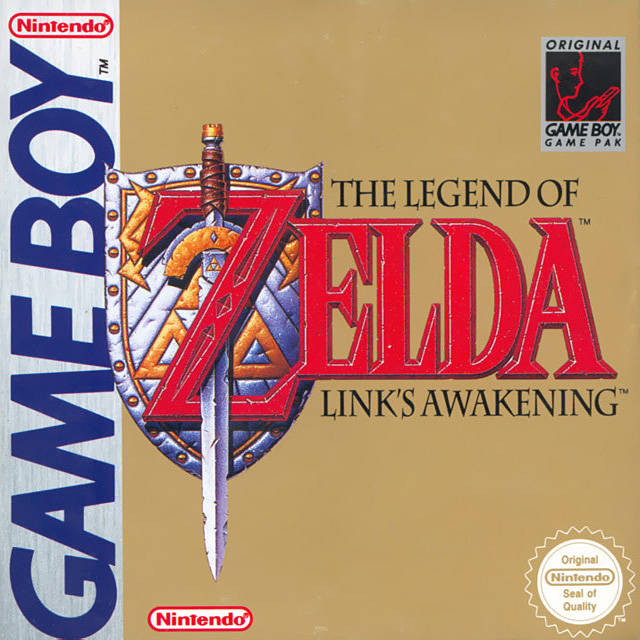
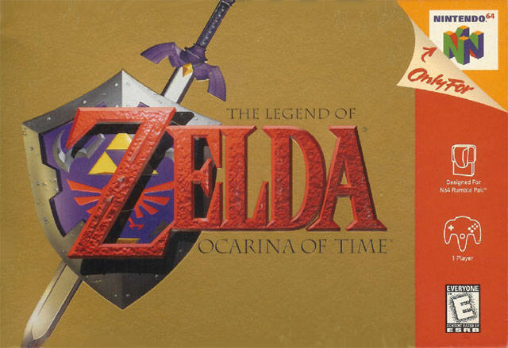
The Legend of Zelda: Ocarina of Time
Nintendo 64
A young Kokiri boy Link, must defend Hyrule and the Triforce from the Gerudo King Ganondorf. Through the power of the Ocarina of Time, Link travels back and forth through time to set things right again. Basically a prequel to all Zelda games, it shows Link's original life and trials before all other Zelda games.The Legend of Zelda: Majora's Mask
Nintendo 64
Soon after freeing his land from a dark tyranny and becoming a Hero, Link begins the search of a lost friend, which leads him to an encounter with an entity known as Skull Kid, a masked scarecrow, and his two fairy sibling companions. Skull Kid steals Link's horse and Ocarina of Time - a powerful instrument capable of manipulating time - and transforms him into an odd walking nut. One of Skull Kid's fairies, however, gets lost behind and eventually teams up with Link, guiding him to Skull Kid's home: the land of Termina, where a strange, evil-eyed Moon will fall and destroy the world in three days, by the power of the Skull Kid's mask... Majora's Mask.
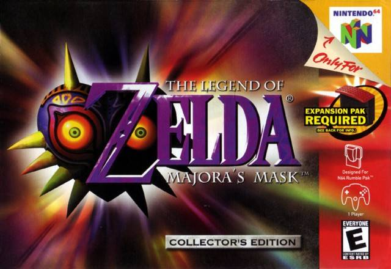
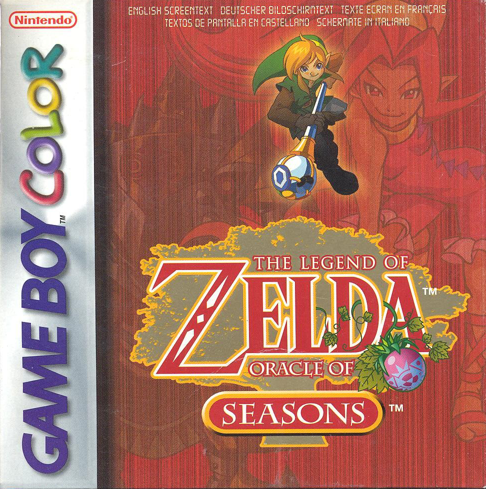
The Legend of Zelda: Oracle of Seasons
Game Boy Color
The Triforce has teleported Link to Holodrum, a troubled land. He meets a travelling troupe of dancers, the leader, Din, actually being the Oracle of Seasons. Suddenly, an armored behemoth named Onox appears and teleports Din away. The seasons in Holodrum change at a moment's notice now, and it is up to Link to find and upgrade the Rod of Seasons and rescue Din.The Legend of Zelda: Oracle of Ages
Game Boy Color
The game takes place when the triforce transports Link to a land called Labrynna. He finds Impa and guides her to Nayru, Oracle of Ages. But Impa was possessed by an evil villain named Veran. Veran possesses Nayru and goes to the past, wreaking havoc everywhere. Link goes to the Maku Tree for help, but finds she has lost her memory, and Link has to obtain the eight Essences of Time to restore the Maku Tree's memory and stop Veran.
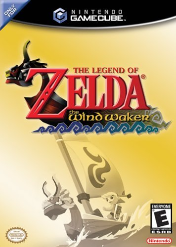
The Legend of Zelda: The Wind Waker
Nintendo GameCube
Hundreds of years after Ocarina of Time, The Wind Waker follows the story of a child named Link. On his 12th birthday, his sister, Aryll, is kidnapped, and the boy sets out on a quest to find her. Little does he know that he is part of a bigger story-one that could change the future of his world.The Legend of Zelda: Four Swords Adventures
Nintendo GameCube
The game begins with the land of Hyrule in a state of fear because of strange happenings that have occurred recently. On a stormy night, Princess Zelda and the shrine maidens fear that the reason for these events is that Vaati's seal is weakening. She summons Link and brings him to the castle so he can protect her and the other maidens while they open the portal to the Four Sword Sanctuary. When they do, however, a shadowy figure appears from the portal. This figure was Shadow Link, who then kidnapped the maidens of the Shrines and sealed them inside their crystals. Link follows him to the mysterious sanctuary where the Four Sword lies in the Pedestal, keeping the great evil sealed away.
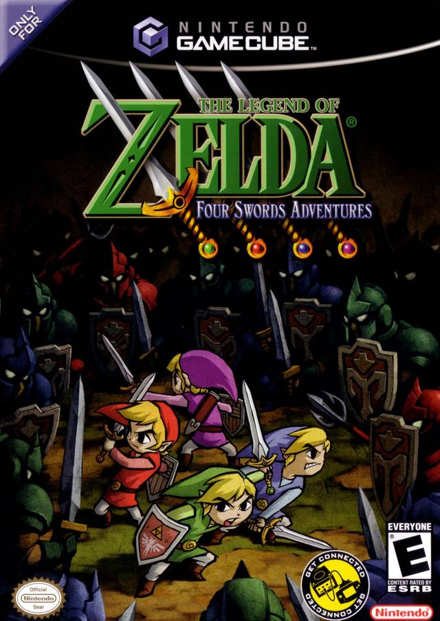
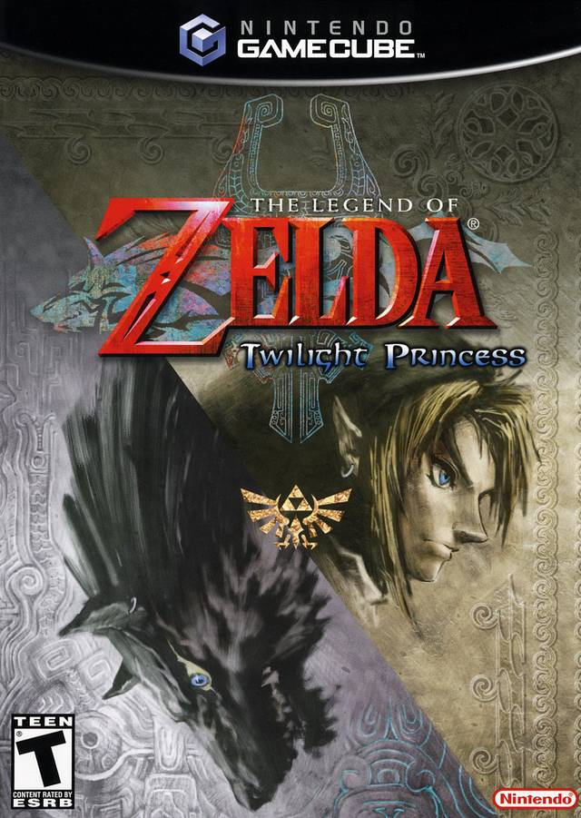
The Legend of Zelda: Twilight Princess
Nintendo GameCube
Link, a wrangler on a farm, is called to Hyrule castle. On his way, his day starts to get bad- he's drawn into the "Twilight Realm", turns into a wolf and is captured by Twilight Guardians. He's rescued by a strange girl named Midna, who helps him in his mission to get the darkness out of Hyrule. A huge adventure, Human Link turning into Wolf Link and vice versa ensue.The Legend of Zelda: The Minish Cap
Game Boy Advance
Link's goal in the game is to revive a lifeless Zelda after being encased in stone by Vaati. To do so, he'll need to fuse the blade that the Picori constructed years ago, but to do so he'd need to find the four elements that are based off of fire, wind, earth, and water. In the climax of the game, Link defeats Vaati and saves Princess Zelda. The two escape from the castle and in the end Link must engage with Vaati one last time. In the end, Ezlo returns back to normal and cures all of the cursed people, and returns back to the Minish World right before the door closes.
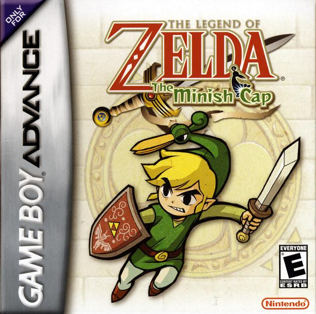
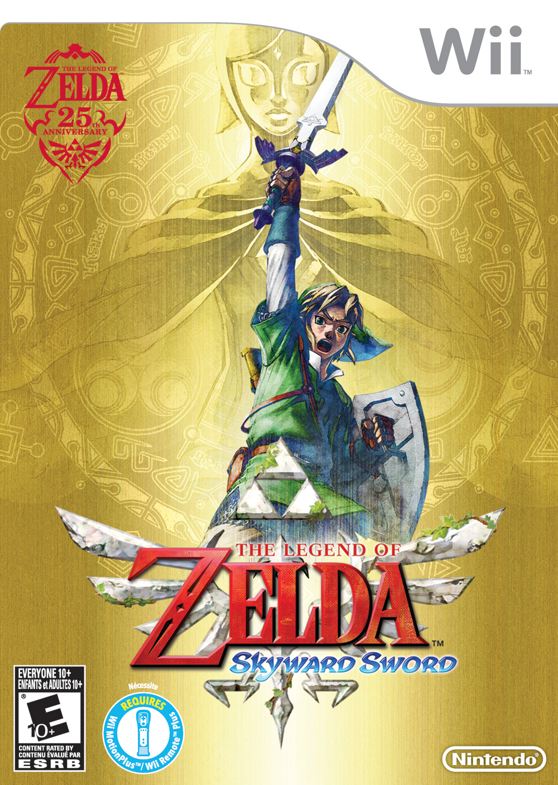
The Legend of Zelda: Skyward Sword
Wii
On a floating island called Skyloft, a girl named Zelda is taken to the surface by an evil entity thought to have been sealed away. Link, a student at Skyloft's Knight Academy, must save Zelda with the help of an unlikely sidekick and seal away the great evil on the surface.The Legend of Zelda: Phantom Hourglass
Nintendo DS
One day when sailing in the sea, Tetra and her gang of Pirates are on a search for the mystical Ghost Ship. According to Tetra, the Ghost Ship is ruled by obscure pirates who don't know any of the pirate rules. She expects to find them and teach them that there are rules to being a pirate. One of the pirates starts to talk about the "Protector of Waters" also known as the Ocean King. All of a sudden, their ship is engulfed in a mysterious fog. They come face to face with the Ghost Ship. Tetra hops over onto the Ship and then lightning strikes and she screams. Link jumps to save her, but misses and falls into the ocean. Link wakes up on a strange island, where he meets Ciela the fairy, and old man Oshus. This is the only game in the Adult Timeline where Link has a fairy companion.
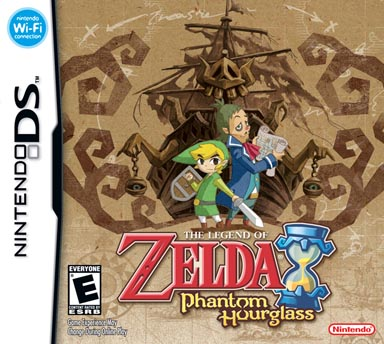
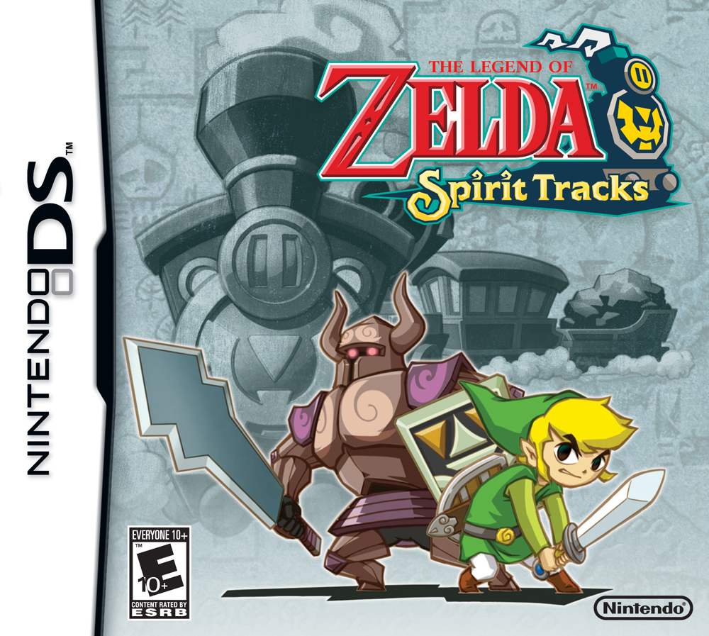
The Legend of Zelda: Spirit Tracks
Nintendo DS
This game is a direct sequel to The Legend of Zelda: Phantom Hourglass. A young engineer travels the land by train to retrieve princess Zelda's body from an evil chancellor and the Demon King.The Legend of Zelda: A Link Between Worlds
Nintendo 3DS
Link sets out once again to save Princess Zelda and prevent another clownish wizard in another alternate version of Hyrule from bringing back Ganon yet again.
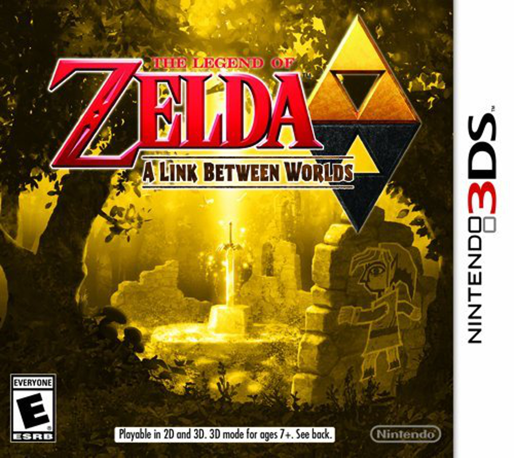
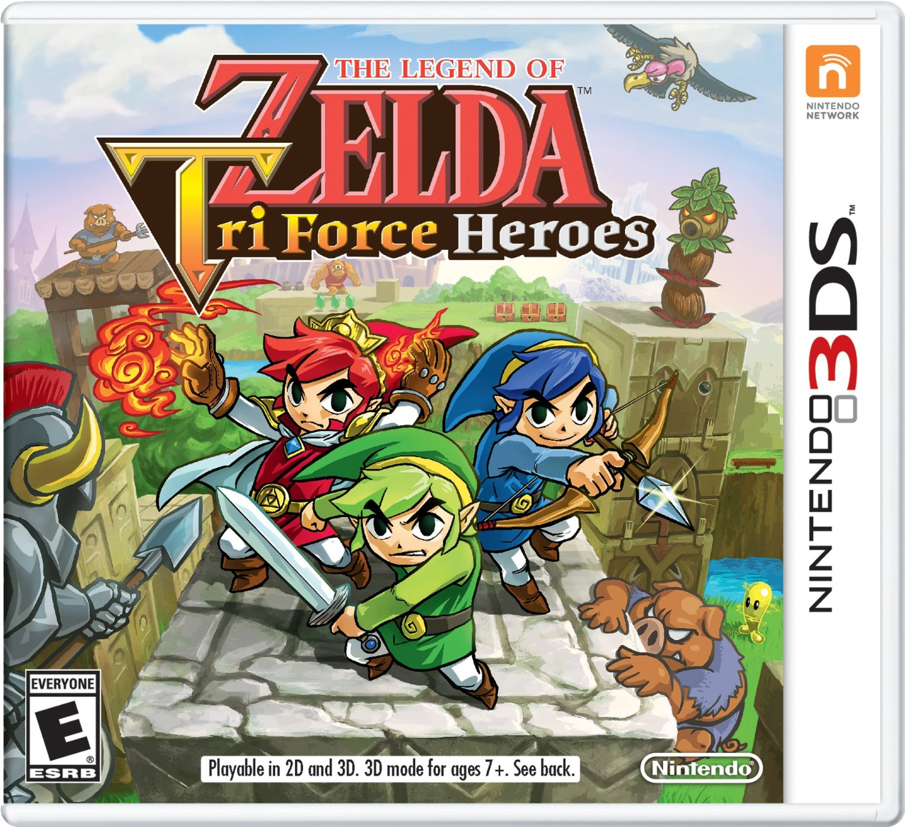
The Legend of Zelda: Tri Force Heroes
Nintendo 3DS
The game is set in Hytopia, a kingdom where the citizens are obsessed with fashion. Princess Styla once held a great power over Hytopia, until she recieves a gift, which is actually a curse from a witch that forces Styla to wear an ugly black jumpsuit. King Tuft, Styla's father, is devistated over the curse and needs a hero to save her from it; he sends out the call for the hero, but lots gather, claming to be the one. However, the king believes that the true hero is one who fulfills a prophecy in Hytopia that tells of three heroes uniting to form a totem, and that hero ends up being Link.The Legend of Zelda: Breath of the Wild
Wii U, Nintendo Switch
In the present day, 100 years later, an amnesiac Link awakens from within the Shrine of Resurrection. A mysterious female voice guides him to the now ruined kingdom of Hyrule and he meets an old man who, after helping Link adjust to the ruined world, reveals himself to be the restless spirit of King Rhoam, the last King of Hyrule. The king explains to Link that Ganon has been sealed in Hyrule Castle for one hundred years, and that his awakening was guided by Princess Zelda. But Ganon has continued to grow in power, and the king pleads for Link to defeat him before he breaks free and destroys the world.
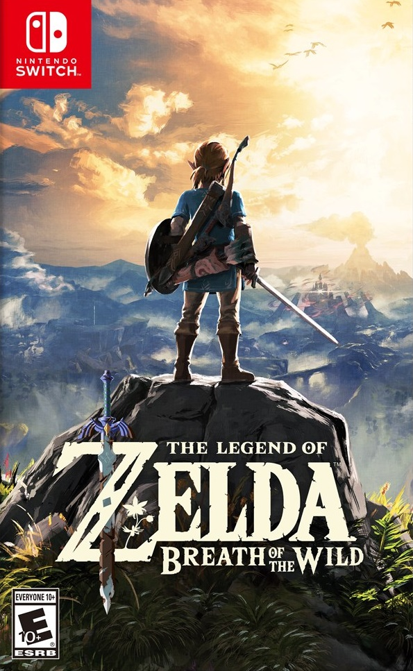